来源：https://a033a8trbo.feishu.cn/docx/IsqTdvX6bolp8IxkqclcWWIWnTh
（全文约1.4万字，看完大约需要45分钟，可点击目录导航随时跳转）
哈喽，各位圈友们好，我是曾在娱乐圈练习七年半的申铭，这是我在生财的第二篇长文经验。这篇内容其实是接着我上一篇分享的项目去续写的（5个月赚了20w，小红书学习资料实战分享-知识星球球 ），是我做了将近一年半的副业项目。这也我们在进行产品迭代、增加品类和优化后端成交之后的一次项目复盘总结。
为了让圈友看完能够有所收获，我把我们下半年增加新品类的0-1实操过程，以及我们在进行迭代升级1-10做增量的过程，给大家做一个完整分享。也欢迎大家多提建议，或者分享可以深度挖掘的赛道方向。
虚拟资料项目的整体门槛比较低，选择赛道，找到合适的产品（电子书、课程、ppt模版、小初学习资料等），就可以在网上注册个账号开始卖了。“低成本+低门槛”导致很多人挤进这个赛道去做，人一多，就会良币驱逐劣币，最后产品好的、团队运营能力强的、账号多的留下来了，赚的也比较多。剩下的很多人，觉得付出和回报得不到正比，就退出了。
我也是因为在逛星球的时候，看到一个圈友评论问：“小红书虚拟资料真的能做到利润5万一个月吗？”，才来写的这篇内容。看到的时候就准备写了，但是过了周五晚上12点还没写完，抱歉没能第一时间分享给圈友。
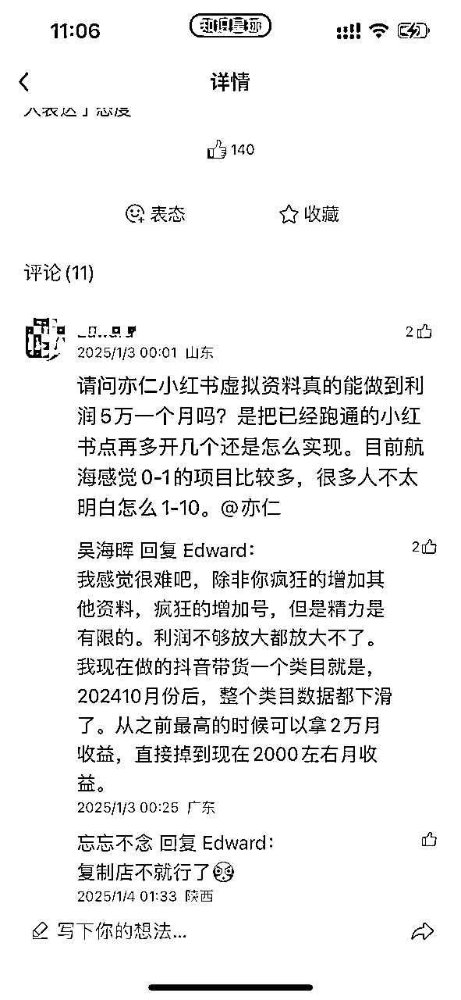
想给这位圈友的信心是：小红书虚拟资料/学习资料是可以做到一个月有5万的利润的，下图是我刚刚实拍的，我们副业小团队2024年9月份新开的店铺后台成交金额，我截图最近92天的数据，成交支付的金额是16.6万。
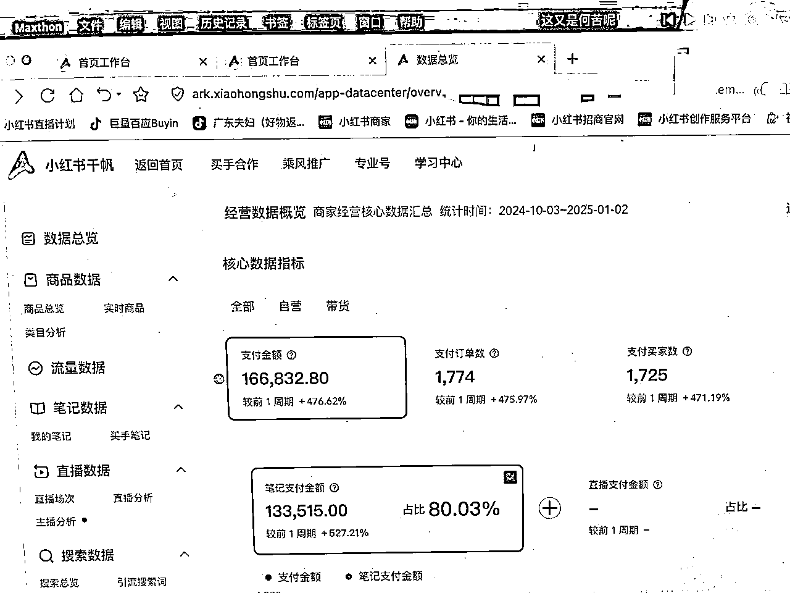
现在如果去小红书上搜一搜，“小学数学”、“高中文言文”、“公考”等等，有很多同质化的资料，这就导致我们没办法去做到更大的获客转化。并且有很多账号的产品，不管是钩子产品，还是入门的付费产品，它的质量都非常差，那用户也就也不会成交了。
但是，却有同行，同样做小初高学习资料、考公考研资料、以及其他资料，店铺却能销售几千单，单个链接获得6位数收益，如下图：
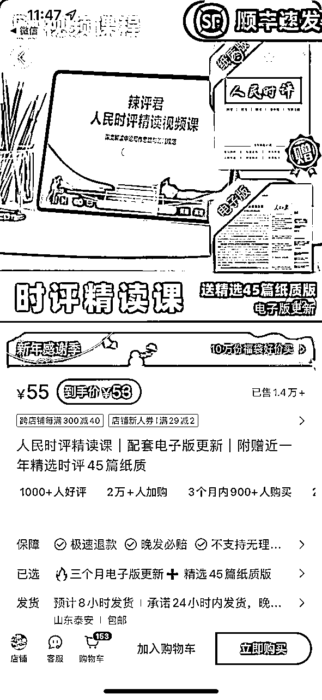
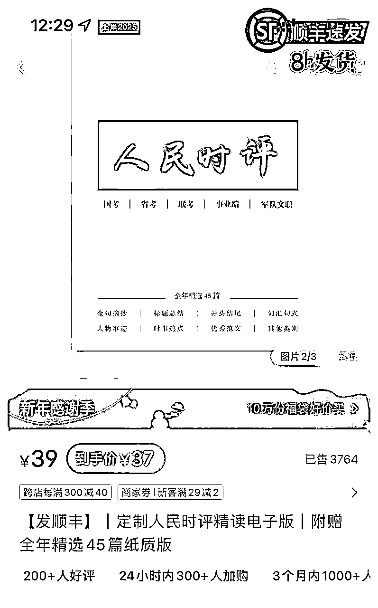
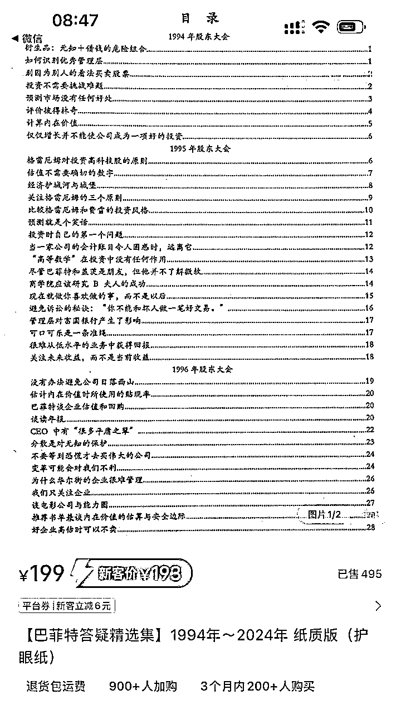
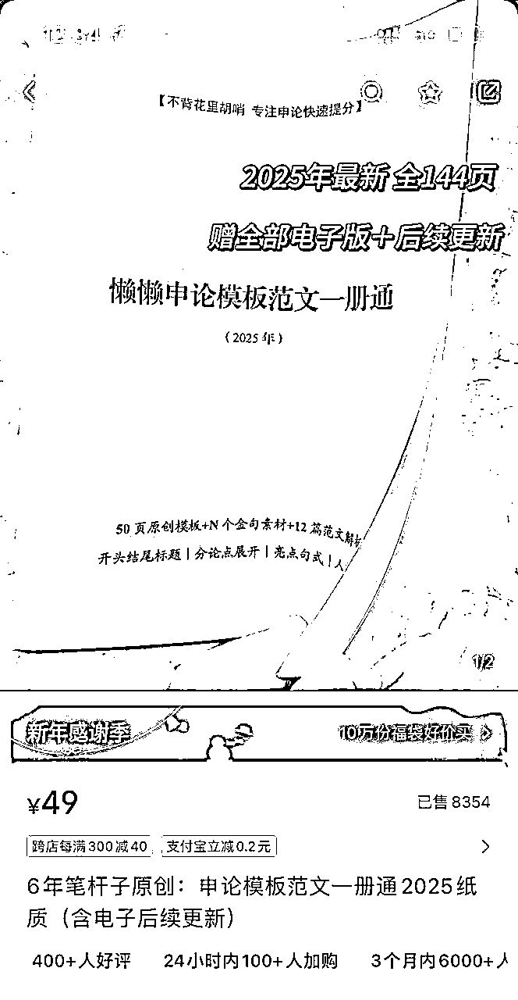
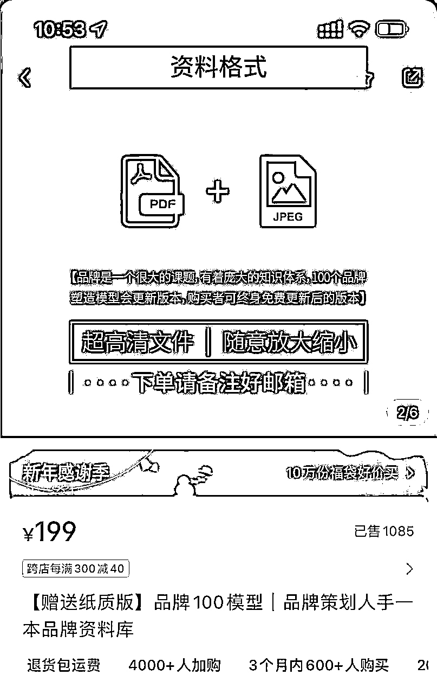
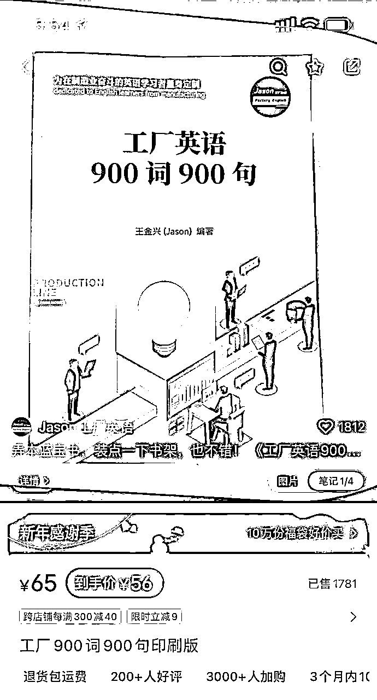
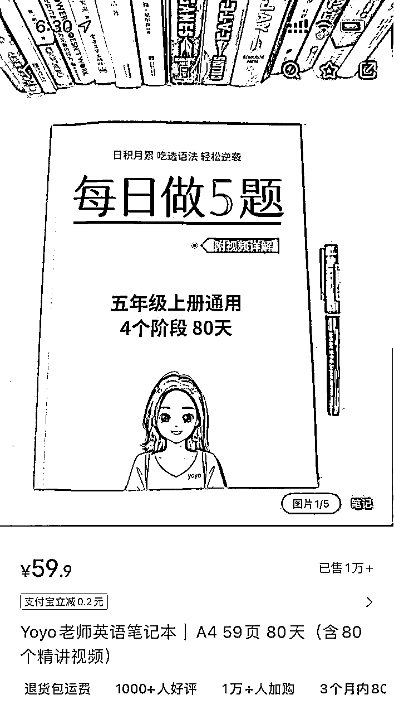
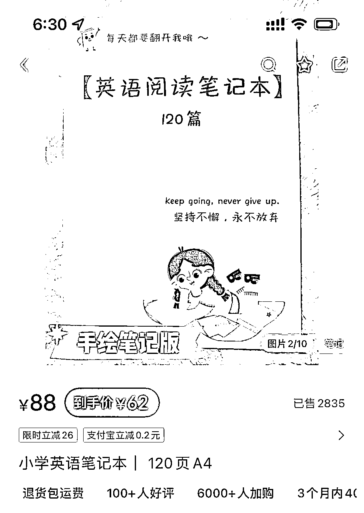
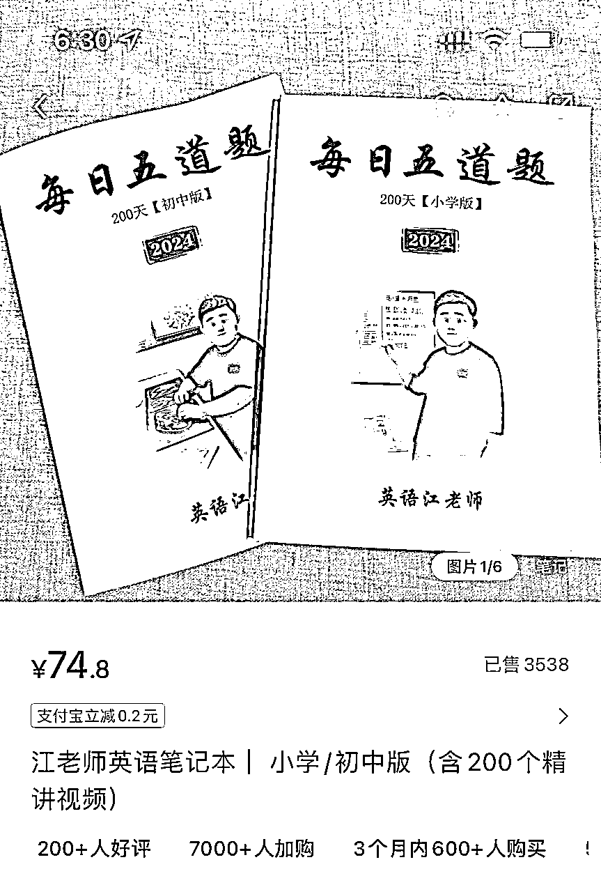
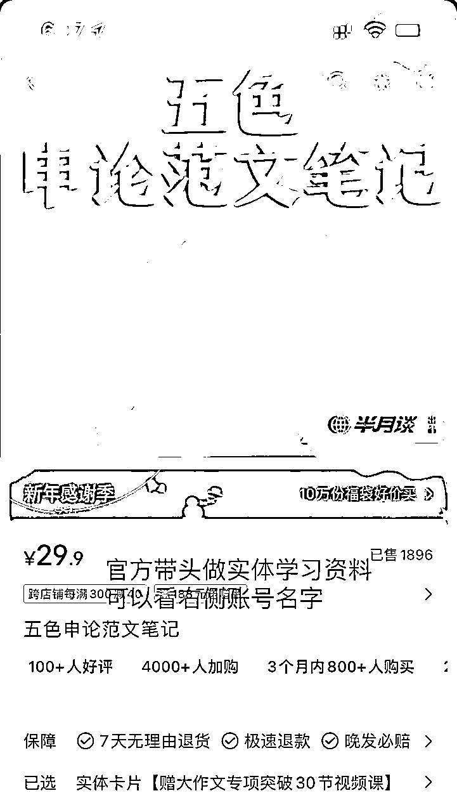
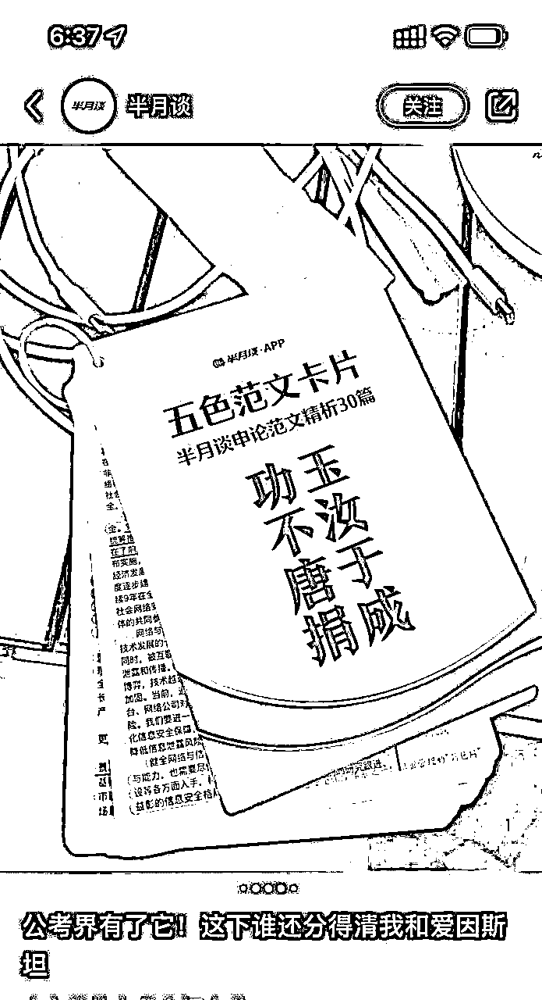
这只是一部分，还有很多案例，各行各业的都有，包括之前圈友发过的刚哥运营笔记、瑜伽馆运营手册、减肥手册等等。右下角的销量已经说明了，平台上的用户是认可的。并且从三个月内购买，以及加购人数来看，这些产品还有很大的空间可以做。但是为什么没有人去复制同款，或者复制同款的少呢？
从个人角度分析哈，第一，懒，大部分人是懒的，不想看字、不想排版、不想整理、不想想，但这种项目，其实赚的就是用户懒的钱，用户懒，我们勤快，利润就是我们的了；第二，怕没有收益，主要还是担心，忙活儿那么长时间去做整理，万一最后没有收益成效怎么办。我上半年在广州，当时去见我另一个朋友，她看到我的项目就和我说，她不会去花一个月时间去做这么个东西出来，因为不知道会不会有结果，就算有结果也不想弄；第三，无从下手，不知道这些东西要怎么弄，怎么系统的做出用户想要的产品；第四，没有行业经验，大部分人认为有些产品需要经验，自己都没经验怎么去给那些行业上有经验的人，或者是自己都没孩子怎么去给孩子做什么小初高的课题。第五，纸质版产品可复制性低，并且大部分不提供电子版，因为一旦有人去做复制的话，那整个产品的画面，二次印刷打印出来就不清楚了，后续用户用起来也不方便。于是，为了避免这种情况，有些人（包括我）都会提前去注册一个版权登记。（如下图）
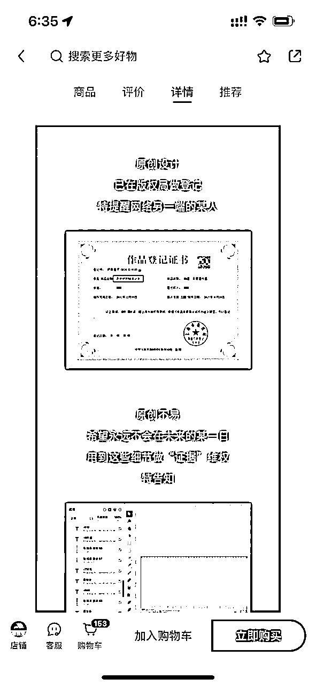
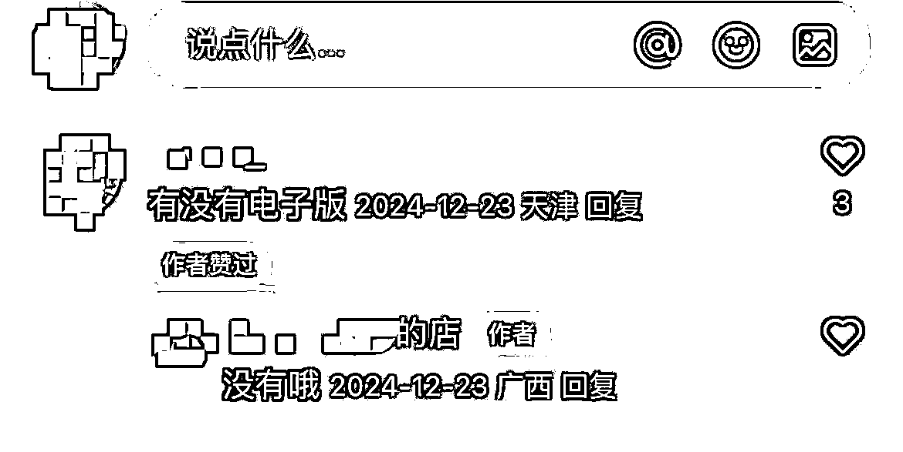
但我觉得这些其实都不是问题，现在有ai、有各种网络，上面我说的那些问题都是可以解决的，解决不了可以在星球搜索关键词，很多圈友都写过答案。比如7天快速了解一个行业、如何搜索等等。
这是我曾在上一篇长文里写的，为什么要做纸质版的原因。除了当时看了星球上圈友的建议，也是防止被人复制。包括我进行迭代的原因，也是因为同行发现我们做的赛道了，开始出和我们同类型的产品。然后因为我在去年春节期间无法发货，那段时间发的都是电子版，导致现在网上也流通了我们产品的电子版。所以，我们进行产品迭代是为了产品更好，内容知识体系更系统，为了增加内容，让我们的版本时刻保持最新版，让同行卖不动。
并且，实体纸质版还有2个优点，一个是对于创作内容上（图文、短视频），拿书拍照片，或者是拍很多书的视频，比如目录各种形式拍几遍、某主题页各种形式拍几遍、翻页的多拍几遍，最后拿上固定的文案去混剪也行，创作内容比较简单；第二个是生命周期上，我没有分析过具体原因哈，就是整个操作下来，实体纸质版的存活周期、项目收益周期比纯虚拟要长很多。就比如说我上次给大家分享的那个项目案例，从23年做，到现在依旧坚挺，销量也没有减少。
现在市面上大部分的虚拟资料，应该都可以做成实体版，其实可以把它叫学习资料。因为用户要去看、去写、去学习，比如小初高文言文、各种考证、案例范文等等，纸质版用起来确实比电子版用起来更方便。但那些ppt模版、合同相关的，用户需要自己改调整的资料没办法变成实体，因为用户要进行编辑和重复使用，所以只能是电子版更方便。
所以优先判断的标准是，用户拿到资料是不是进行知识学习或者书写，如果不是这个需求，那大概率不能选。
同时，我们在增加新品的时候，坚持的一个原则是赛道要垂直细分，这样更能解决用户的具体需求，比如说有很多做电商虚拟资料的，这个就太泛了，自己在前期准备产品的时候也很难去收集到那么全的内容，那我们就可以细分去选，如跨境电商、独立站电商、抖音直播或者服装直播，这些细分之后的领域，人群的需求也很大。再或者是很多人在做考公方向的虚拟资料赛道，考公科目里有申论、行测，但从我们角度讲这两个也有点大。一大张卷子里，还有很多不同类型的题，那就可以再进行细分，比如说判断推理题、公文写作题、提出对策题，以及一些时政的衍生题等等，那大家就会针对性的去搜和学习。
基于上面的标准和逻辑，我们先去定赛道，可以通过各种考试平台、在线培训平台去找上面的课程分类，看看上面有没有我们想要做的赛道；或者是借助ai提问，向ai提问现在市场上一共有哪些行业，哪些行业的人群是最多的，自己在进行筛选；或者是去boss直聘网页版，看上面的岗位/行业分类，基于每个岗位/行业去延展所在岗位或者行业的人群，他们有哪些痛点或者需求。
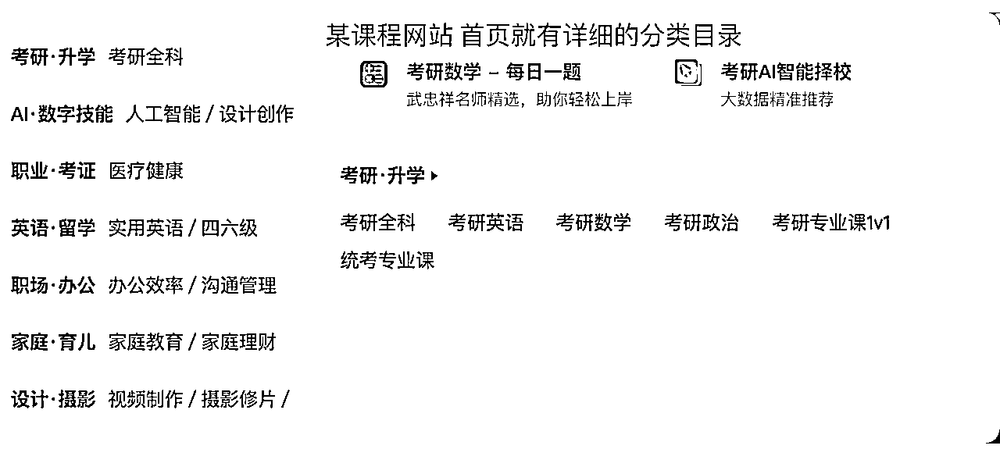
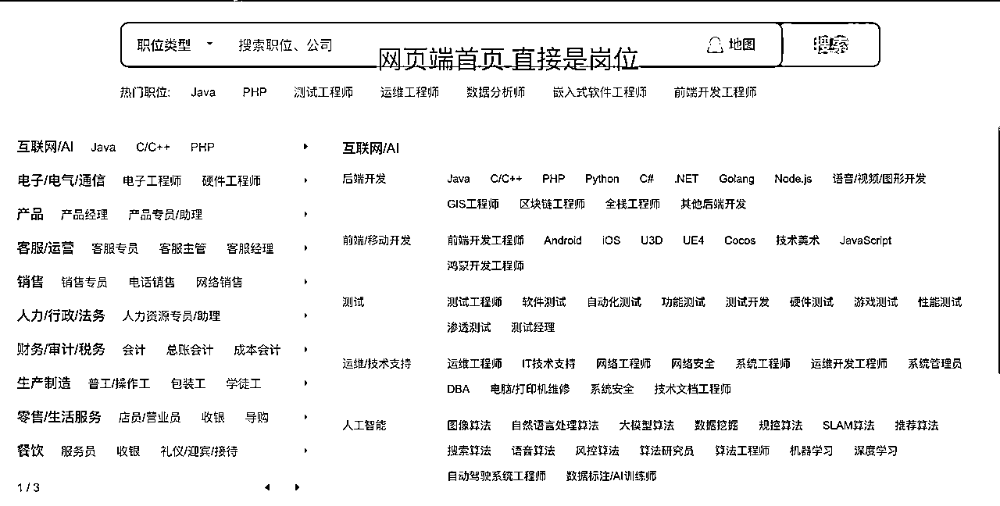
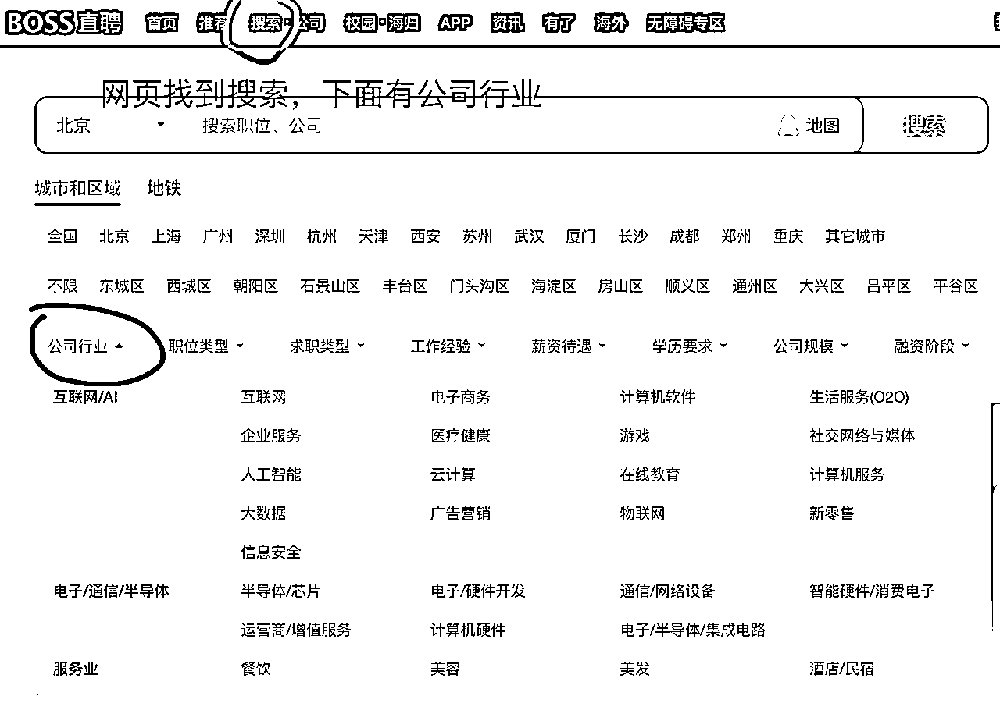
但前期我更建议大家选择自己熟悉和擅长的行业，这样操作起来会更快。
在选择想要做的细分赛道之后，可以向ai提问：xxx行业/岗位的从业者大概有多少人？
这个回答虽然会很模糊，但可以根据它能给到我们的反馈，做一个基础的判断和参考。如果回答的人数在三百万人以上，那代表我们做的话是能卖出去的，且能卖的还不少。但是如果从业者人数比较少的话，比如说只有一百万或者几十万人，那我们就要考虑一下，要不要选择这个赛道。如果说这个赛道你非常熟悉，还很想做的话，要去思考一下，这些用户他们日常活跃在哪些平台，如果要进行获客销售的话，应该选择哪个平台。
除了向ai进行提问，还要去受众日常活跃的平台去进行检索，看看平台上的同类型内容数据怎么样。拿我现在做的产品来说，我们主要是在小红书这个平台上，觉得小红书平台的用户更优质，所以那种更偏下沉市场、偏男性群体的实体学习资料我们通常不会去做。
在选中赛道之后，我们会先去小红书上搜一下行业关键词，目的是：1、看用户的需求痛点是什么，方便我们做具体的产品；2、看平台上用户对于该类产品的需求度有多高，包括社区内同类型内容是不是受欢迎。
如果需求度不高的话，平台内的相关笔记数据也很差，那我们大概率不会去选，因为很难卖出去，很难获客。
具体操作举例：
A、选择赛道：假设选择的赛道是考证方向，在考证赛道我看了一圈，最后定下了医考，这个医考是我从某网络课程平台选到的，如图。假如说该课程里边报名的人还挺多，我觉得这个赛道可以选。
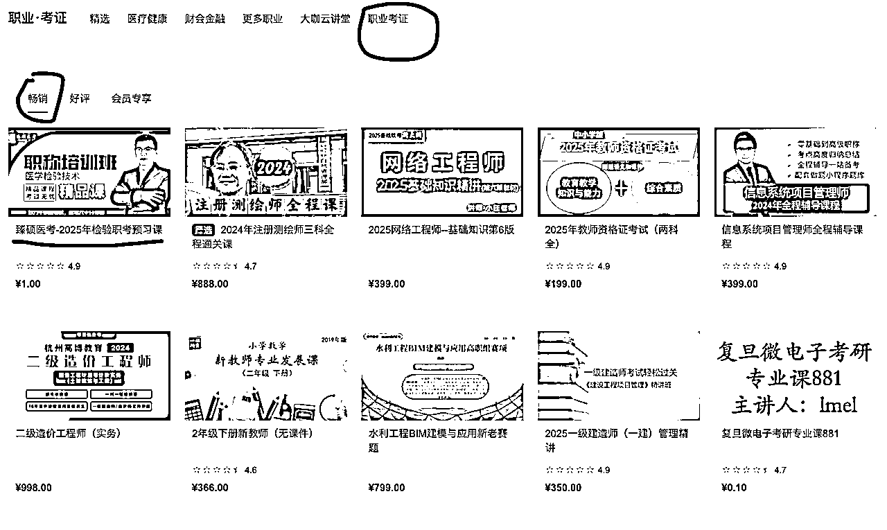
B、搜索关键词“医考”，打开右上角的“筛选”，排序依据选择“最多点赞”，查看搜索结果。从上往下滑，多看几页。第一看，第一个出现的搜索词右侧关联的笔记是否大于1万+篇；第二看，搜索页中是否有点赞超过3000的笔记；第三看，搜出来的点赞过千的笔记是否大于10篇；第四看，点赞高的笔记里带的话题，话题阅读是否大于2000万，且里边是不是有别的点赞过千的笔记没有在我们前面的搜索里出现。因为有些词输入之后，右侧不会显示笔记篇数，那我们可以进到垂直的话题里面，看话题里的笔记是否大于1万+篇。在满足前面四点的情况下，可以判定该赛道在小红书平台可以做。（非标准数据，我们目前总结比较合适的数值，在这个数值下的实体资料产品卖的比较好，低于这个数值的，出单获客很慢）
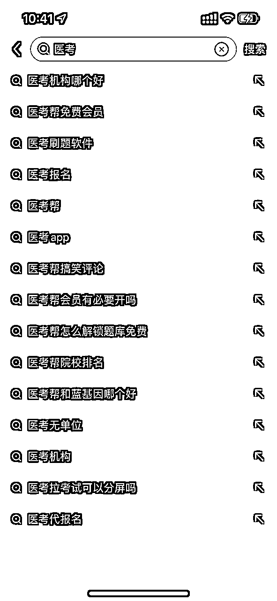
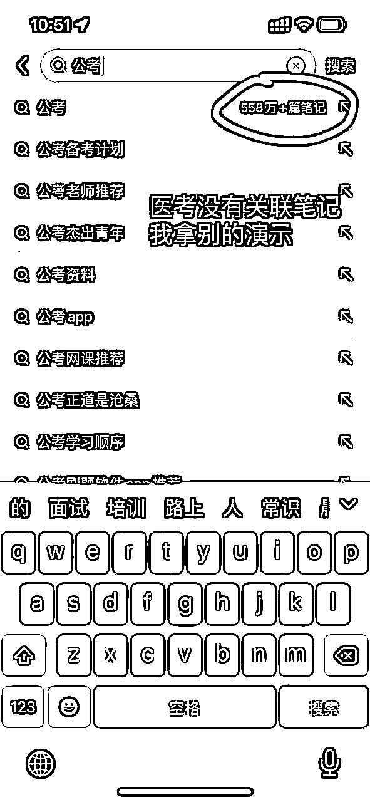
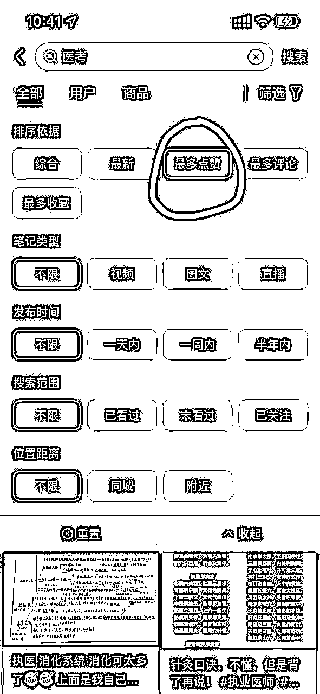
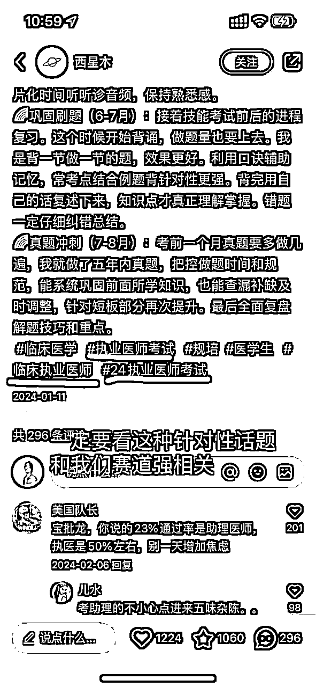
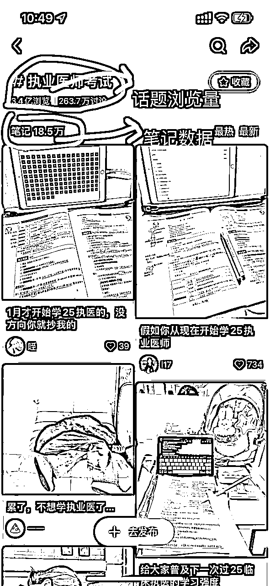
可以看一下小鹅的10月份帖子：如何四个小时吃透一个陌生行业（4小时吃透陌生行业，数据和AI工具如何助力?-知识星球 ），很完整系统的分享如何快速了解陌生行业。
有了基础的了解之后，我们后续再进行产品完善的时候，会更加的游刃有余。
A、细分到倒数第二级做产品。前面在说选赛道的时候，有说公考分行测、申论，然后里面可以再分判断推理题、公文写作题这些，这些差不多已经细分到底了，那就可以直接去做这个产品，比如说专门做一个公文写作题的。如果拿医考举例子的话，假如是执业医师考试，通过搜索得到职业医师考试有分为四个部分：基础医学综合、临床医学综合、预防医学综合和医学人文综合。这个如果再细分的话，就是细分到不同知识点的笔试题了，所以我们在这里就可以选择做“基础医学综合”的产品。去把医学基础知识，往年常见基础考题进行汇总，比如生理学、生物化学、病理学、药理学、医学微生物学、医学免疫学等，然后再去其他渠道（同行的）找一找，把它加到我们最后的实体资料里。
B、也可以直接搜索赛道关键词“医考”“执业医师考试”，看搜索关联词，平台延展到小红书、淘宝、咸鱼、拼多多、百度，看靠前的关联词，有没有可以直接作为产品主题词的。大多数情况下，排名靠前的关联词都是用户经常搜的词，是他们的痛点需求词。
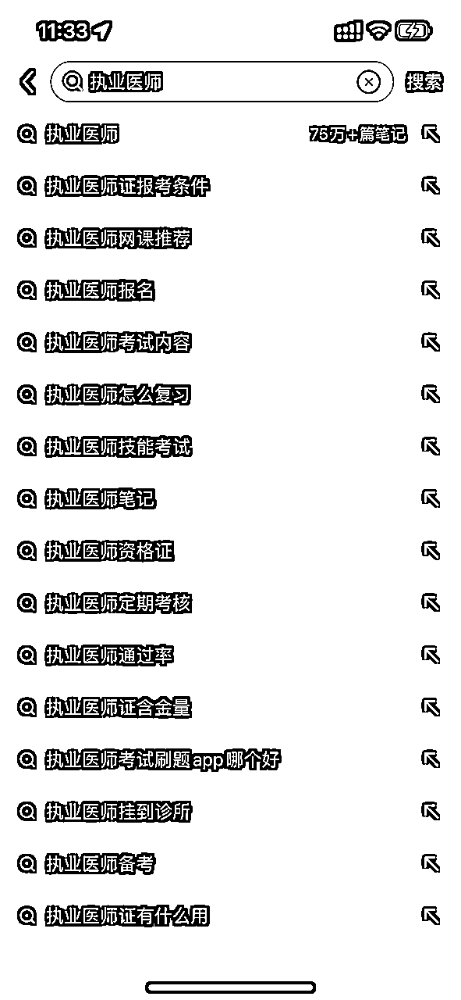
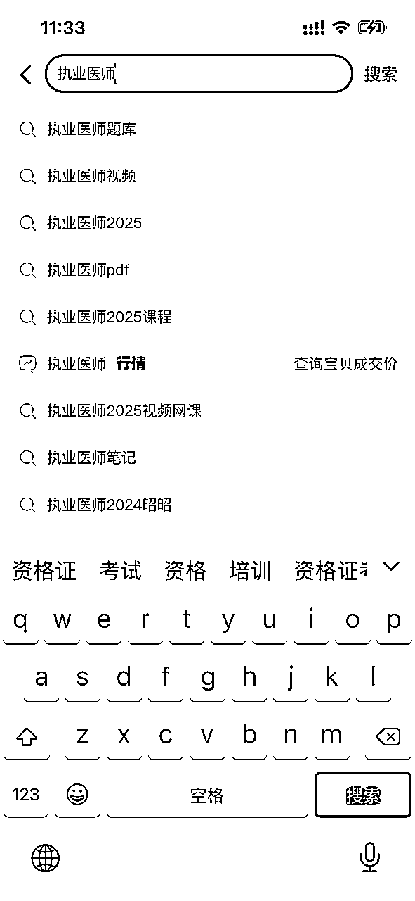
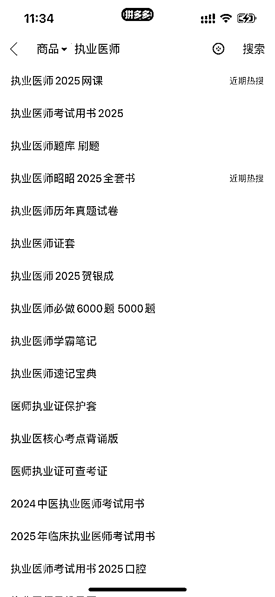
C、如果上述方法没办法定下来的话，可以直接搜上面的关键词。看同行在卖什么，哪个卖的多，或者他们在用什么做引流品，参考我们同行去跟品就行。毕竟，同行是最好的老师。
我们2023年是两款实体学习资料产品，2024年新增了4款实体学习资料，但有一款还在打磨中。整个跑下来，一款实体学习资料的准备周期大概是15-30天，15天的那个品是因为整体不到10万字，很薄，所以弄的比较快。其他的基本上都在30天左右，这个是产品从0-1的周期。
其实能到这一步已经很不容易了，但很多人不愿意去落地执行去“做出一个产品来”。前边有说，我在2024上半年身边人有说不愿意去做，然后前段时间我还在朋友圈发招募，做这个实体学习资料的共创社，很多人来了解，但是见到具体的执行的时候，都说自己不行。但其实，这个只是整理工作，下面是方法：
A、买多家同行的电子版。尽量去淘宝、咸鱼、拼多多去搜产品的关键词，去找到今年最新的，多找几家，不同的品，可以让他提前发目录，防止购买重复。然后把买过来的产品进行分类，主要是里面内容知识点的分类，这样后续再汇总整理的时候会比较方便。接下来去借助ai，或者同行的现成目录，做资料的框架搭建，也就是我这本实体学习资料要怎么先后顺序进行整理，优先输出目录，再往里面填内容。如果遇到有版权的，可以借助ai进行洗稿，但特别的产品除外，比如说执业医师考试的基础题、历年题这些，都是标准的，没办法进行洗稿。
B、行业网站下载。有些行业赛道是有专门的网站提供下载的，比如历年中考题、历年高考题等等，去专门网站下载就行，然后再进行分类汇总。
C、视频课讲课稿洗。这个有些行业赛道不适用，不是所有赛道都有视频课能用，我们目前在做的赛道因为没有视频课，所有的东西都是收集整理的。但是，如果有框架之后，找到很多视频课，不同老师的、不同机构的某些共同知识点，他们讲的内容可以借助ai进行合并整理，内容很丰富。但，是否合法合规，我目前不了解，这个是提供一个思路。
D、整理同行公域贡献的内容。即去不同平台搜索关键词，比如小红书笔记搜公文写作，有很多同行在笔记里分享现成的案例，他们这些案例他们自己也不知道哪里来的，找那种数据好的且主页没有店铺的，把内容复制整理到我们的文档里备用，做好分类，然后再进行整理。
上面的方法可以单独用，也可以四个一起综合用，主要看所在赛道各种渠道提供的内容丰富度怎么样。但是我建议是，大家前期可以不用弄特别多字，给自己留好空间做产品更新补充和迭代，这样给用户的观感会更好，它会觉得产品更“即时”。
排版的目的，是为了让产品看起来更正规，且增加用户的体验感，所有人都不想买一个排版乱七八糟的东西。同时，一定要做好错别字的检查，过多的错别字，也容易让用户的体验感不好。初期在整理文档的时候，可以先在飞书上面整理写，因为飞书会提示错别字。在整理完成之后，再下载下来进行排版设计。等排版设计完之后再检查一遍错别字，或者是等排版设计之后，联系印厂进行打印，自己拿着打印的实体版本逐字逐页的找错别字。
不用担心，都会有错别字的，只要第一版错别字不过分，都不影响体验的。后续如果有购买的用户发现有错别字，可以记下来，等下次印刷前改掉就可以了。假如谁发现了错别字，我们还可以给他转个5块、10块的，一个是防止差评退款，另一个是增加好感度。
在定排版之前，想好自己这份实体资料要做什么尺寸的，目前常见的是a4、16开、32开、对开（大32开）、b5；做什么制作工艺的，胶装、车线、电镀活页、塑料活页等；做什么样的封面克重，铜版纸、印花纸、毛毡、牛皮等等。基于你想做的类型，去反推应该如何设计，或者是设计排版之后，给每种不同类型的进行打样，喜欢哪个就留下哪个。
A、有设计能力的，愿意花时间的，可以真的把它设计成“书”的那种排版，每一页都做认真的，如下图，但是真的很耗费时间。
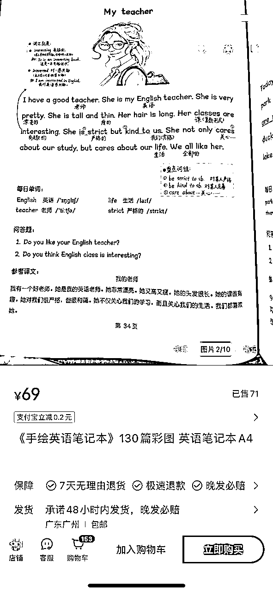
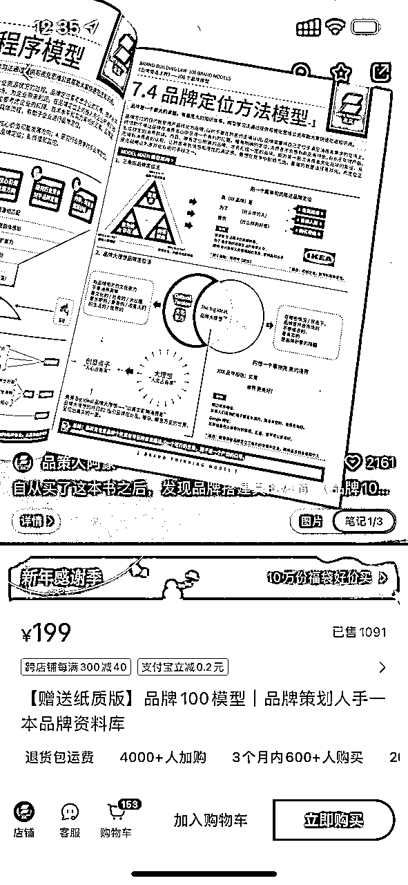
B、字体上做亮点。如图，走手写风格，可以真手写，也可以直接用手写字体，并且这种风格还可以直接做个卖点：手写笔记。
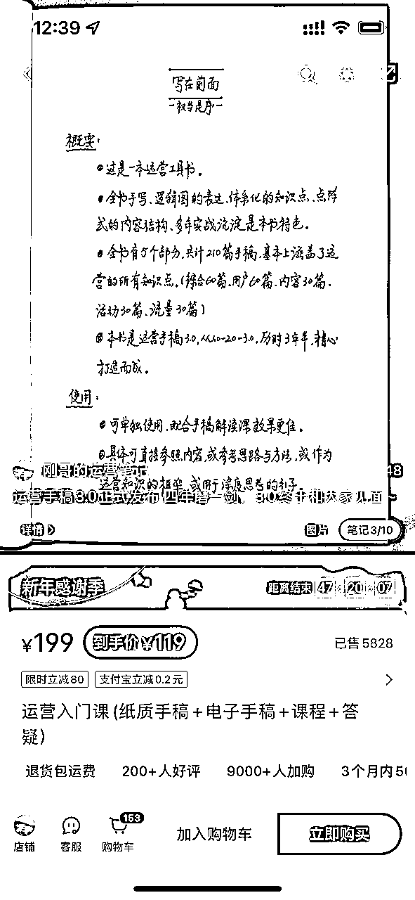
C、普通排版，常规纯文字，可以网上搜一些常见的排版的参数，但是字不能太小、行距不能过窄。我这里罗列个常见的，你可以根据你打印出来之后效果进行调整，因为每个人喜欢的排版形式不太一样，你的排版也要参考你的纸张大小。常见字体，黑体、宋体、隶书等常用字体；字号选择，正文一般5号或更大号，标题通常是正文字号的2/3/4倍；行距一般设置为字号的1.5倍或2倍，字间距通常设置在20-50之间。
D、封面设计。有设计能力的可以自己进行设计，如果没有设计能力的，可以找一些模版网站修改就行，比如说稿定上搜索“书封面”，有很多封面案例可以修改使用。
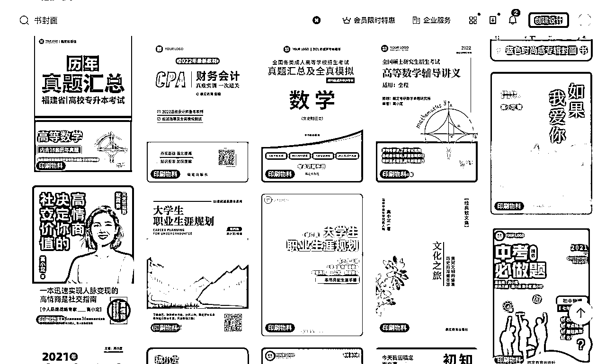
上一篇有分享过，直接在淘宝搜索“所在城市名+书册打印”就行，这样主要是提升效率，今天下单明天就能收到。如果囤货的话，从印厂拿过来的物流快递成本也不高，缺货临时补货也很快。
单本印刷的成本很低，越薄越便宜，但是厚一点的也不会很贵，比如说两三百页的a4纸印刷，成本也不会超过20块，如果你那个渠道超过了，请和他砍价。如果产品迭代频率不高，前期测试卖的还可以的话，可以每千本批量印刷，这样匀下来每本成本只有几块钱，薄的话可能就一块左右。
前期应该印刷多少的数量？我们通常新品会印50-100不等，赛道选的再错，50本也都能出掉。如果前期没有预算，或者不想承担那么大成本的话，你可以每次单独下单，把收货地址改成你用户的地址就行。下单之后，第一时间去支付宝找【菜鸟】，找到刚下单的快递，点开【包裹加密】，把【向收件人加密包裹的商品信息】打开。这样收货人就看不到商品来自打印店了，不然会在菜鸟那提示是什么商品链接发出的。
如果是自己发货的话，想体验发货的快感，可以每次囤个100本。并且自己发货还有一个好处是，能够保证自己发出的产品不会在快递途中损坏，因为产品的包装（比如气泡袋）都是自己提前选好的，运输的快递也是自己选的。
便宜方法一：利用小红书店铺后台发货，小红书后台出单之后，可以直接在后台选择发货。目前最便宜的是极兔快递（4元/单起），第二便宜的是圆通快递（5.3元/单起），其次是中通、德邦（7元/单起）。极兔是最慢、破损率最高的快递，如果包装的比较好，不考虑店铺分的话可以考虑，性价比之王。圆通是综合下来比较合适的，但是各地圆通服务不同，我们用过有的地方收到货是好的，有的地方收到货都烂掉了。中通、德邦相对来说是破损率极低的，如果中通和德邦两个对比的话，我选择德邦。
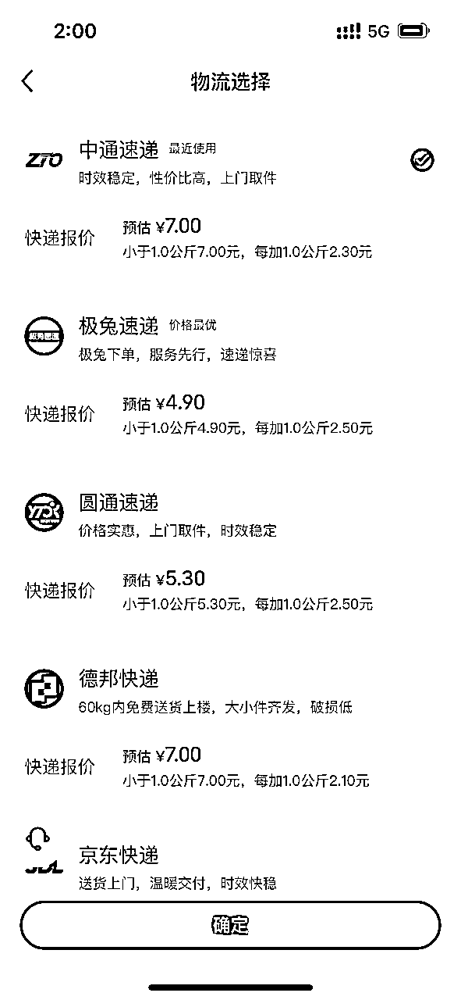
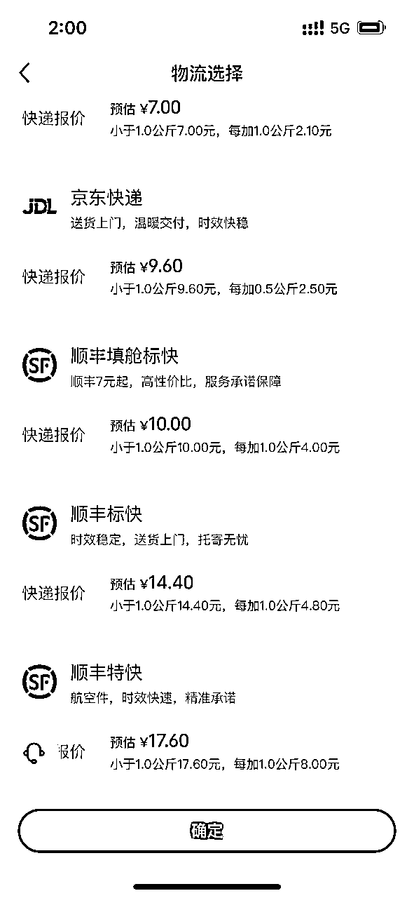
便宜方法二：联系所在快递站点的老板，沟通说冲单号，能便宜到什么程度，大部分能便宜到每单（0.5-1kg内）在2.5-3.5元不等，500单起冲，也就是一次要冲一千多块。如果冲单号的话，记得找老板要一台打单机和纸，一般要 就会给。如何和快递站点的老板谈判，话术可以去小红书搜一下，这一单省几块钱也不少呢。
在整个产品体系里，前面做的这些实体学习资料属于引流品，但属于有一定利润的引流品。我们初期的想法是，引流品也要盈利。包括做这样的引流品，是为了筛选优质的用户，把他们筛进朋友圈。因为他们愿意花几十元付费了，后面再去进行二次转化成交，包括交流，也更好操作。曾经有个同行和我说，他每天引流获客几百人，而我只能引流几十人，说我这样效率太低了。但是我俩在详细沟通后端产品（二级、三级产品）转化率的时候，我的转化率比它的高，转化成交的总金额虽然差不多，但略比它多个几十到几百块不等（按照每天算的）。但因为我们引流品也是有足够的利润的，整体来说，利润是大于他的。这个也是我坚持做这样实体资料来去引流获客的原因之一。
来给大家解释一下，在我的概念里，一级产品是引流品，也就是我们在做的这个实体资料（客单价通常不超过100元，成本价*3/4），二级产品是线上小课（客单价在199-499之间），三级产品主要是客单价在四位数的陪跑或着线下课。私域引流获客优质用户的目的，也是为了让他们成交二级和三级的产品。
这个产品逻辑是知识付费的产品逻辑，我们还有一个产品的赛道比较特殊，他只能通过一级产品引流获客，后续没办法再提供二级“知识类”产品，于是我们基于这个人群专门设计了二级产品：乙方服务。即引流过来之后，接他们的活儿。如果自己无法承接的话，可以找一些团队或者个人来做承接，包括二级、三级产品自己做不出来的话，也可以找专门的团队来做承接，或者是直接分销他们的产品就行。
举个例子，有个赛道很独特，他们用户群是三四线城市以及县乡镇街道的gwy，这个群体很大，他们的部分需求是某些公文写作、材料写作、报告，但有一部分不擅长，对材料原创要求不太高，所以会去网上做一些学习。于是通过一级产品的引流品，把人引流到私域之后，可以进行运营沟通，把提供的业务给他们。因为他们平时也比较忙，有些时候有些活儿要外包出去，比如某些材料、某些活动策划、ppt制作，可能是个人的、可能是部门的需求，每单有个几百到几千不等，特别是特殊节日的时候。
说实话，纯一级产品的成单，就我们目前选的赛道来说，利润是足够，平均单店利润在三四万，个别店因为开了蓝v主店+三个主理人，单月利润超5w+。但是但是，大家别被数据欺骗了，我这个只是说我现在的赛道，不同店的数据目前是这样的，其他赛道不确定，可能多可能少，因为也和内容运营有关系。
店铺搭建主要有两个关键点：店铺资质+商品页。
每套实体学习资料必须搭配一套视频课程，就算是视频课程很短也没有关系，可以是每节几分钟，做个七八节视频课。视频课内容可以是关于实体产品使用的介绍，也可以是所处赛道的基础知识。
搭配一套视频课原因是让实体资料合规，所有实体资料是买视频课赠送的学习资料/内部培训资料/实体课件。同时，在整个实体资料整理完之后，也可以去贵州版权局官网注册一个版权，成本大概在50元左右，版权主要是针对模仿我们出盗版的同行的。
我们店铺商品链接挂的产品属于知识付费类的产品，即视频课。我们在小红书注册店铺的时候，先选择笔记本、服装这种不需要资质类目，方便店铺快速通过审核。通过审核之后，再在品牌类目里边添加我们正式要挂的类目，提前准备好所有资质。
通常需要的资质是专业学历证明/专业证书/证明/职业资格资质证明，具体哪种类型的资质可以用，可以看一下这个：小红书电商学习中心
如果自己没有资质的话，需要开通个体工商户或者有限公司的店铺（经营范围要有教育咨询服务、业务培训），然后找到有资质的人，让他把相关的资质的照片、身份证提供过来，然后自己再做一个教师合作的合同，签字盖章之后扫描成图片。注意，提交平台的所有资料照片一律贴上水印“仅供店铺审核注册使用”，因为别人会在查看店铺资质的时候看到这些资质，但是大部分人不会去看的，所以放心。
关于自己没有对应资质，应该如何找？
A、社交平台/boss直聘发布招募xx合伙人，写明要求要有xx资质，可以一次性给他钱，也可以合作给他分润，然后他也贡献实名账号来发。沟通OK后，让他发资质的照片和身份证正反面的照片就行。
B、在贴吧/小红书直接发，说找有xxx的人，付费购买一次使用权，通常几百块就能搞定。因为有些品牌类目要求有某专业的毕业证就行，所以可以去相关高校的贴吧，直接发布需求。
之前还能进行白嫖，因为不需要身份证，现在都需要身份证正反面了，所以如果自己没证且来不及考的话，可以尝试付费找一下。
资质完成之后，店铺品牌类目审核通过之后，可以创建商品了。商品主图、详情页都可以借助其他模版平台去做，但关于商品详情页有一个要注意的，就是所有商品图上，都不能出现【书】这个字。因为我们这个产品链接是知识付费的视频课，如果出现书的话，是需要另一套别的资质门槛了。但是可以在商品规格里写上“xx节视频课+赠xx学习资料”。
在创建商品的链接的时候，因为选择的时候教育相关（知识付费），所以一定不要把支持7天无理由打开。同时，在商品的介绍里也要标明，属于知识付费产品不支持7天无理由。这样后续有用户申请退款的时候，可以拿这些证据截图进行拒绝，大部分情况下，都会判商家赢。但是如果觉得没有关系的话，这个部分就无所谓了，可以支持7天无理由。
有了实体资料之后，发内容其实很简单，直接拍照片、live图去发图文就行。也可以提前拍摄好很多视频素材，最后再做剪辑。
这种类型的小红书笔记，只要账号没有违规限流，下面的内容形式都可以发，内容主要以发和实体资料相关的。然后我先给大家说一下，如何进行选题和封标创作。
A、搜索赛道或者产品或者用户痛点需求的关键词，然后选择筛选，按照最高点赞的进行排序。把和我们内容关联性强的笔记，都做一个收藏留存。这里所出现的点赞超过1000的笔记选题和标题（粉丝数无要求），多可以进行颗粒度模仿。
B、也可以进入高点赞的笔记里，查看对方笔记所带的话题词，只要和我们相关的，都可以点进去查看，然后找到合适的笔记进行收藏留存。（爆过的选题和内容，还会再爆）
C、在百度/小红书/抖音/拼多多/咸鱼/5118 输入赛道产品或目标人群痛点需求词，查看下拉词，靠前的/搜索数据高的词，是大部分用户关心的痛点词。可以根据对应的词条，或者词条搜索之后呈现的内容进行内容选题。
下述的关键词为用户痛点需求，或者我们本条笔记所展示主要内容的关键词。
实体资料实拍图：即直接拍实体资料干货部分内容，该部分内容也可以直接作为笔记封面。在拍摄的时候，比如某干货占4页，那我们在发的时候可以只发三页，让笔记有缺憾感，用户想看后面内容，他就会去下单。不要完整都发，发了我们就没有转化了。
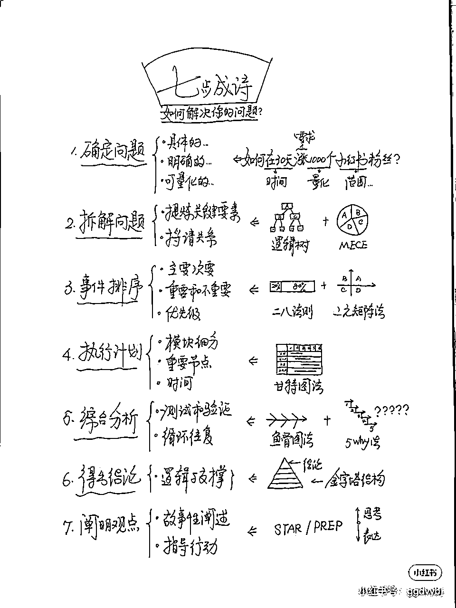
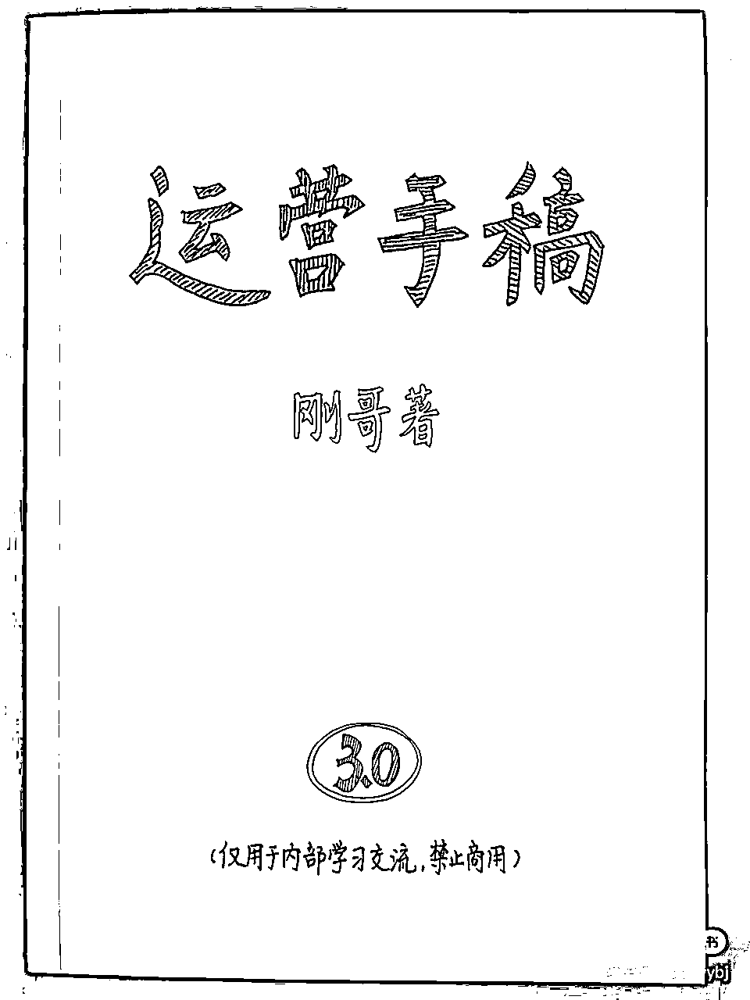
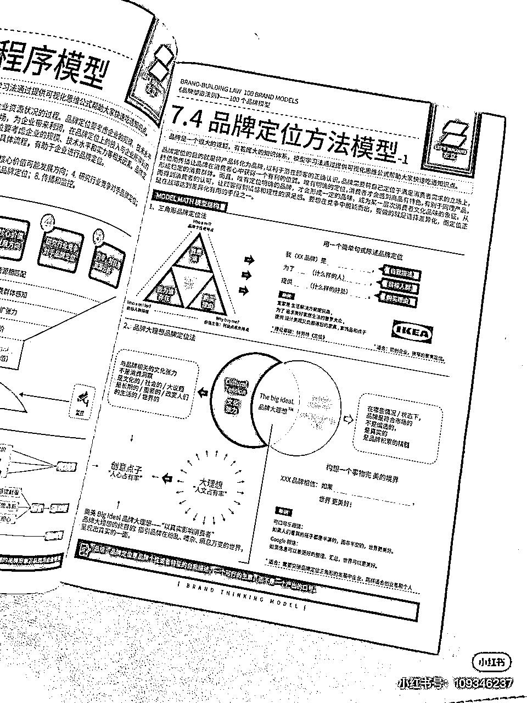
实体资料实拍图+手写笔记标记：如图，这种内容的数据非常好，区别于直接实拍。用户看到有笔记标记的内容他更愿意点击，给用户营造了一种真实感，有分享的感觉，且为用户整理出该条笔记的关键信息。
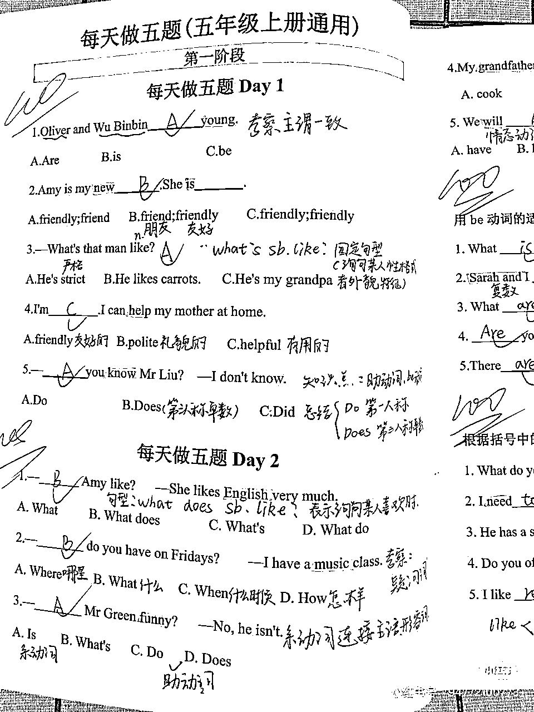
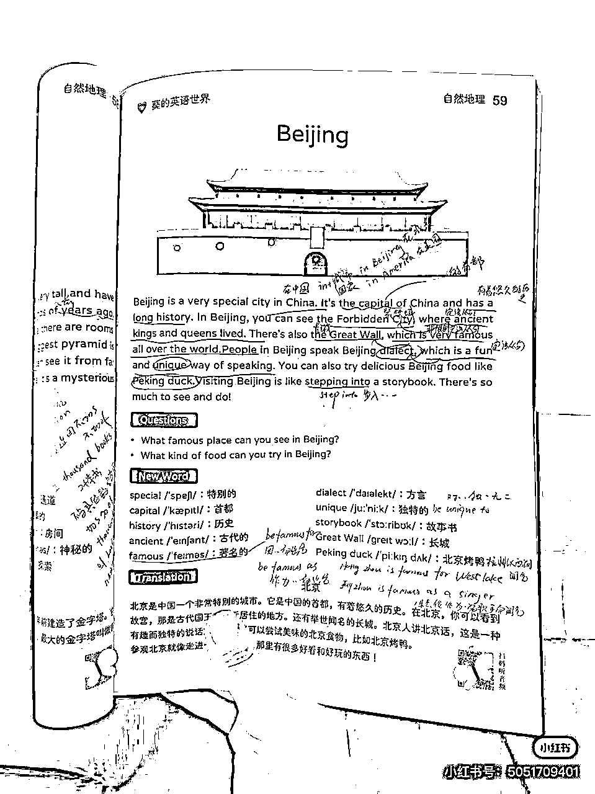
实体资料实拍+关键词：这个组合给用户展示感觉是足够的信息密度加上主题提炼，适合知识类笔记的发布，如果是精准用户，他们的点击率会更高。
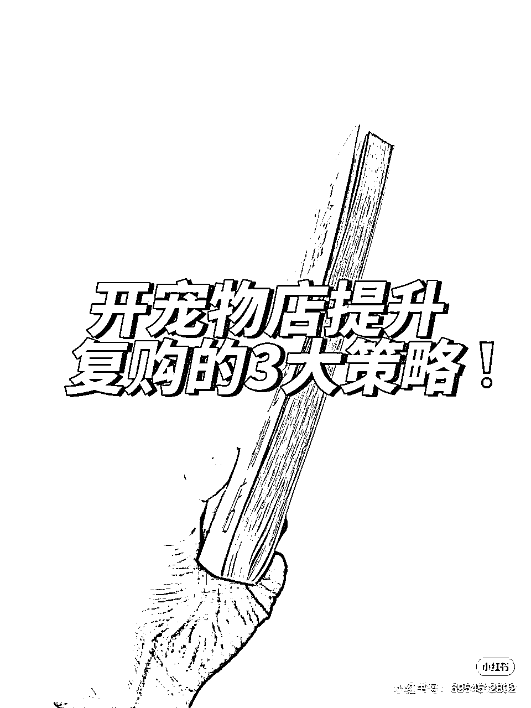
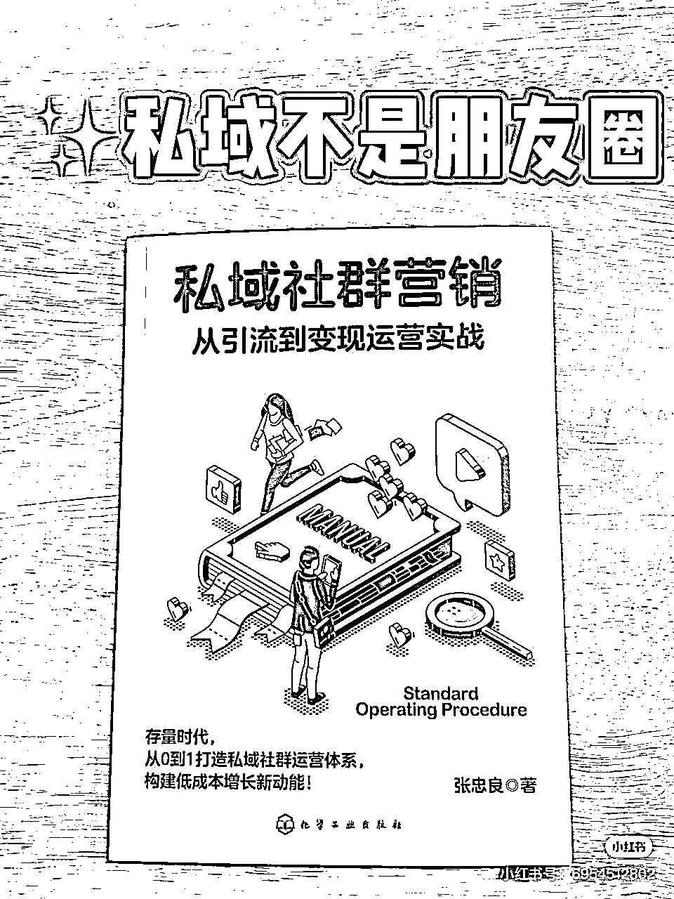
真人出镜+关键词：真人出镜可以直接露脸，也可以去ai换头，也会给用户一种真实网友分享的真实感，也会愿意点击。关键词和常规笔记封面的关键词逻辑一样，但我们目前测下来数据转化最好的是“数字+痛点/卖点”组合。
明显大字（关键词）：如果封面实在没办法弄，或者是想统一主页的整体风格的话，可以单独设计一个风格的封面，封面上的文字主要是产品或内容的关键词。但是这种类型的笔记，在我们的内容里数据没有其他数据那么好，转化也相对较差。
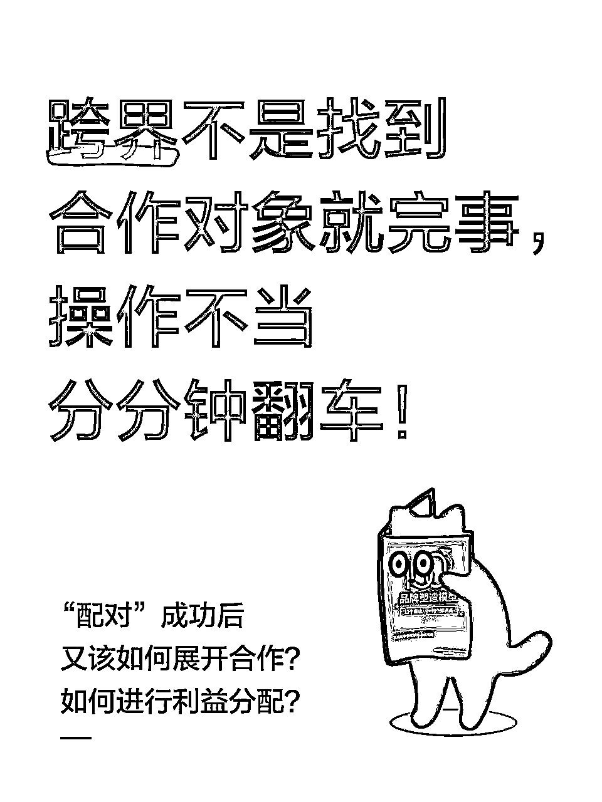
高信息量非实拍图（可以是备忘录、聊看记录、自制的图）：封面是高密集的信息，给用户一种干货干，就算是没有干货，用户也想点进来看看到底怎么个事儿。这种类型笔记在我们历史笔记中属于数据比较好，但是转化略差的笔记类型，因为笔记和产品的关联度不太强，但是却能提升笔记的数据权重，让用户看到之后会进到主页来看其他内容。
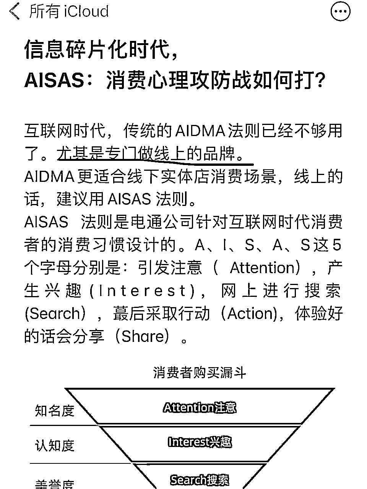
笔记类型和封面分类有点像，主要是对于封面的一个延展。
书本实拍的话建议多拍几张图，这样做的目的是增加用户的浏览时长，营造内容的丰富度，促进用户下单转化。就算是用户没有下单，因为笔记内容比较丰富（干货），大部分人也会收藏点赞，留着以后再看，有了用户数据笔记就可以进行下一波曝光了。
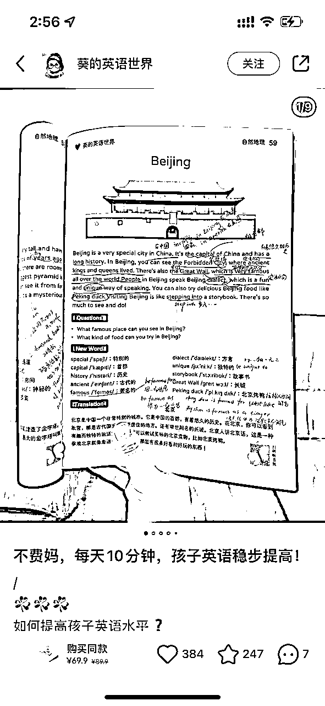
真人出镜说口播就行，如果有经验或者有想法的可以看一下生财2024年7月份（应该是7月）的视频号口播航海，老师有推荐几种不同类型的口播视频呈现形式，那些拿过做这个口播相当于在给这个做升级。口播文案内容可以参考同行的文案，也可以直接拿实体资料中的知识点做每部分的口播文案，但时长不要超过一分半。
拍摄素材配上音频，可以说是一劳永逸，后续出内容就直接拿一次拍的素材进行混剪就可以，随时替换文案或者背景音乐。视频素材可以提前拍好，同个内容可以分三四个角度拍，比如说封面，可以拍纯色背景、其他颜色背景、或者特写的。实体资料提前拍摄的素材可以有封面、目录、各种翻页、某些章节知识点特写。
进行常规的图文制作就行，要求突出结构和重点。
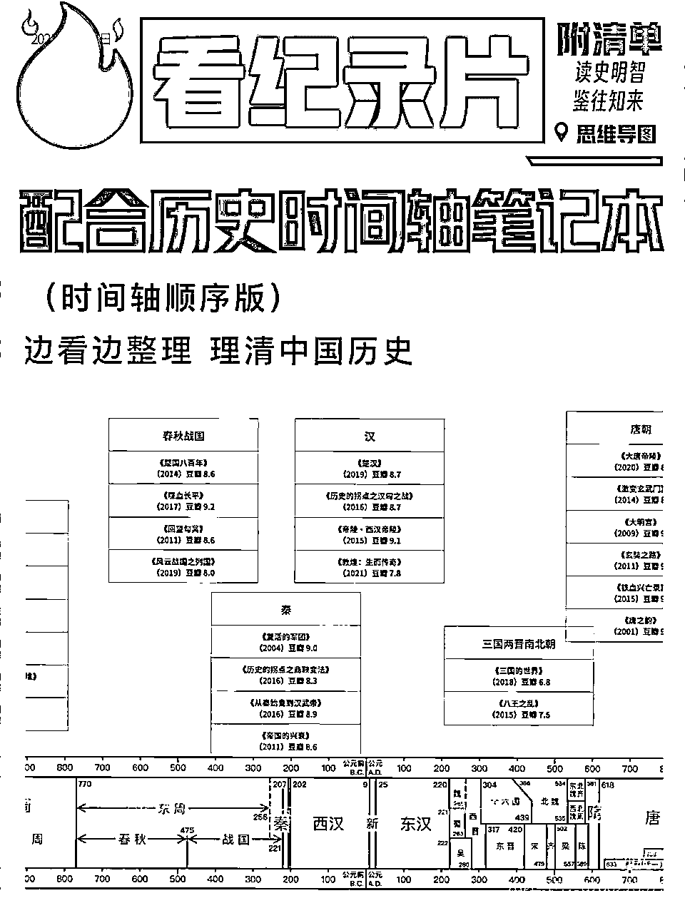
在我们产品上线之前，设计好转私域的钩子，思考用户为什么要加我们的微信呢？比如我们出门去超市买个吃的，老板让你加微信，肯定不会加的，只有他能提供一些附加福利，才会给我们动力添加。
那基于我们实体学习资料的特性，可以有的附加福利是：
A、赠送相关文档。可以是我们的电子版（但我不建议发原版电子版）、某些必用表格文件、扩充知识点的文档等，在商品详情页也标注好。直接说在线上客服没办法发，只能加微发。
B、社群服务。同行社群，社群内会同步更新其他的新资料，社群后期不会进行收费。
C、提供咨询服务/指导/复盘。购买即赠送某某时长的咨询服务，随时可以帮助用户解决问题。
A、用户在小红书后台下单后，可以直接查看用户的收件信息，可以在微信好友处，直接添加用户的手机号。大部分情况下都能加上，个别情况用户留的手机号不是他的微信号。
B、在实体资料中添加引流卡片/资料上印二维码，二维码下方写上前面提到的钩子。
C、在小红书千帆后台，搜索短信极速发货/阿奇索，为对应的商品设置下单后可以收到的短信。在短信里写明引流钩子+微信号/二维码。
把人引流到私域之后，还可以进行深度沟通，通过沟通引导用户进行商品好评。包括有些用户下单收到货之后，想要申请退货或者给差评，也可以通过私域进行沟通，直接把钱在微信主动转给用户。我们主动的情况下，用户大部分情况都不会进行差评或者恶意退货的。
上面的内容是我们团队，做实体学习资料项目0-1的过程。后续为了增加收益，希望能够从1-10，也做了很多尝试与调整。下面给大家分享一下，我们具体调整的策略，有些是我们已经做完了的，有的还在琢磨怎么弄怎么完善。
初期我们更新频次都是每天一篇，有的时候可能半个月更新一篇，因为每个账号都能出爆款笔记，所以就算不发笔记，每天的销量都是固定的。
后来也是因为一些实际压力的问题，想要去增加每月的销量，最先做的就是增加更新频次。我们开始疯狂的去各个平台找同行爆款内容、爆款选题，但好多其实已经被我们自己给占了，只能找那些在1天内点赞数据比较好的，去抄他的选题和标题。频次也从之前的每天一篇，变成了每天3-4篇笔记，发布时间也主要集中在午饭前后、下班和晚饭前后、睡前11点。
刚开始增加更新频次的时候，完全看不到数据反馈，至少第一周没给我们任何反馈。很多笔记是过了一周后才开始有数据，个别的会有小爆，每天陆续会比之前多个一两单。坚持了差不多一个月，我们都要放弃每天三四篇的更新频次了，因为再这么更新，主页笔记都要把这本实体资料拍个两三遍了，没得东西发了。
然后，突然有了转机，每日的订单数比上个周期要多5单、6单，后续慢慢稳定超过10单，但总是在8-12单左右徘徊。增加单数的原因是，我们又有笔记爆了，不到一周连爆两条。说实话，我们自己都不知道因为啥爆了，因为同样的内容已经很久没人爆过了。
于是我们开始进行复盘，销量增加的原因到底是什么？内部复盘讨论之后，一致认为是爆款笔记的原因。而爆款笔记产生的原因是，笔记的数量增加，相当于所有话题、选题都去重新跑了一遍肯定会再出爆款笔记。爆款笔记的频率则是看我们有没有及时更新内容，只要更新下来，后续就有爆的机会。我们曾经在2023年12月份发过一条笔记，数据平平，但是过了将近两个月，在2024年二三月，那条笔记爆了，密集的增加了很多的点赞收藏。当时那条笔记爆的原因，是因为有某个新闻政策，我们笔记提前踩中，然后很多人点赞收藏和下单。
用更新频次去对抗平台算法，也是通过更新频次，让主页笔记的选题更多，所以才会有爆的笔记，只要笔记爆了，那必然会增加销量。
在第二阶段，我们内部讨论：既然我们也去其他平台参考同行的内容，那我们为什么不去其他平台去发我们的内容呢？
于是，说干就干，同步开了抖音、快手、b站。得到的反馈是，b站播放数据最差，快手播放数据最好，抖音播放虽然一般，但是问询转化的很多。我们就定下把抖音也作为重点渠道，同步和小红书一起做，另外两个平台直接放弃。但是如果说产品的目标人群在b站、快手这两个平台的话，也可以继续弄，但是要针对这两个平台去出内容，没办法直接同步小红书的内容了。
但是在抖音做也是有缺点的，因为没办法在抖音直接上商品链接，小红书上能用的教师资质，到了抖音用不了。我们开始把人直接引流到微信或者小红书，大部分人还是喜欢在微信直接转账下单。把人引流到微信的方法很简单，有人问的话，就让他私聊，他如果要微信号的话，让他直接复制我们的抖音号（我们会把抖音号直接设置成微信号）。日常发内容的时候，也会用户小号在评论引导告诉大家产品在小红书。
在后来我们发现，有很多人是通过搜索关键词找到我们的。我们有一个账号，一直被限流，每次在抖音发内容，过了三四天播放量都没有过百，但是它点赞收藏数据每天都有增加。我们在后台查看了一下数据，发现很多都是通过搜索进行点赞的。
于是我们开始尝试付费，把在小红书曾爆过的笔记，以及短时间能有很好数据的笔记内容，在抖音上进行付费推广，直接100块投【上热门】，投对标账号。投放计划里也没做什么特别的选择，就是直接投。本来想的是，账号既然没有问题，那我们就在文案标题里写好关键词推出去，只要推出去了，就代表搜索的人能看到。因为投了付费，内容点赞数据也不错，也增加了用户点击率。
然后最近看到波哥分享的抖音搜索流量案例和玩法【项目实操】探索抖音搜索流量里蕴含的赚钱密码! -知识星球，我们准备执行去调整一下我们抖音平台的账号。
抖音其实也可以直接上虚拟资料，但我们担心账号问题，目前还没有上。目前看同行主要以两种形式在把虚拟资料/实体资料上到商品链接中，第一种是注册icp备案，商品链接以课程链接的形式商家；第二种是申请出版物经营许可，商品以伪书籍的形式进行上架，如下图。年后我也准备把这两个申请一下，看一下是否容易违规下架。
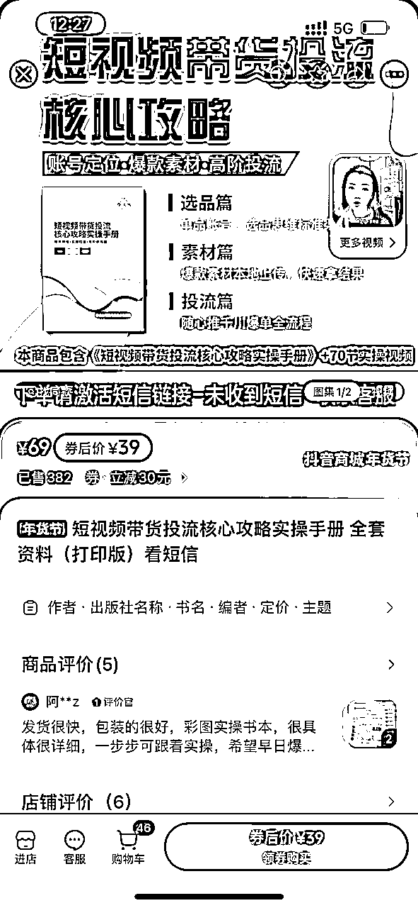
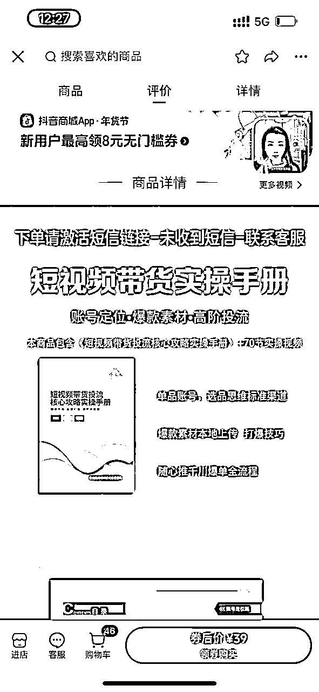
增加产品是我们跨的比较大一步，初期增加的产品是围绕我们舒适区做的，都是同一个大赛道下，几个临近垂直细分的产品。但是这个赛道下面，不是所有垂直细分的产品都能做出那个销量，我们做出产品后，的确有的卖的好，有的到现在已经两三个月了，连50单都没出上。
于是我们又开始尝试去换到别的赛道去做产品，每本资料都差不多花了一个月的时间，最长的花了将近两个月时间。因为是完全陌生的领域，很多知识要重新学。我们开始买同行的产品，买各种相关出版的书，老师的课程，去把我们最终的大纲确定下来。
初期逻辑也是和前面一样，都是0-1操作出新的产品，最后到店铺稳定出单。不过因为是不熟悉的行业，个别店铺稳店花了将近一个多月的时间。虽然是做了新领域的资料，但是项目的底层逻辑是一样的，是在增加整体的收益。
总结一下就是，可以增加产品，一个是本大赛道进行横向挖掘，一个是换其他赛道进行挖掘。
因为一个账号在小红书有限的话，我们给每个店增加矩阵号进行曝光。由于我们没有太多能帮我们实名且绑定银行卡信任的人，我们后续增加账号的逻辑是：一个蓝v店铺+3个主理人账号。这种几个号共用一个店铺也是蛮好的，方便发货和客服沟通。
然后每个账号更新的频次是每天2篇笔记，主要发布时间是午饭前后，以及晚饭到11点睡前。账号之间的笔记没有互相挤压流量，且所有流量的终点都是那个主店铺。
如果可以的话，去开很多同款账号，自己复制自己，做很多不同的店铺。或者是去找其他人和你一起兼职做，你去给他分佣金也可以。
我一直认为，不管是虚拟资料还是学习资料还是实体资料，他们的成交大头在后端，也就是我们的二级产品和三级产品。可以去优化二级产品的价格，比如说我们为了销售额，我们统一把二级产品价格设置成199元，真的非常值，因为同行的价格都是299-599之间。还可以去优化私域的运营，把私域打造成是一个人，而不是毫无情感的销售机器朋友圈。因为是人，所以转化会更好。等我后面给大家分享完整私域运营心得，但不一定会特别好，因为我也是下半年才开始优化的，有一些小的收获。
设计后端产品的目的就是为了让用户多次成交嘛，所以不要吝啬二次/三次成交机会，如果没办二级/三级产品，现在去找做的比较好的同行，你去在朋友圈转化他的产品就行。不要觉得尴尬，因为我们已经做过了，我们的账号在小红书上互相抄，还都把对方拉黑了。但是我们那个领域的二级产品跟不上，就去找到它去聊合作，于是一拍即合。
有很多人都在做学习资料的会员，一年168，两年298。会员的权益是在会员期内，可以随时免费阅读学习，且会有周更/月更固定的更新频率，给大家创造新的内容。大家可以基于这个去发散一下，看看我们的产品是否能做这个会员体系。因为我们目前的产品没办法做这种会员体系，年后的另外一个别的赛道的比较适合，等我们年后把会员体系执行后，来给大家反馈成果。
从个人角度来说，我感觉实体资料真的会比纯虚拟的要好很多，可复制性低、生命周期长、引流品也有利润。期间我也跟好多朋友在沟通，他们问我还要不要继续去做这个项目，我的回答是要。就个人来说，这每个店收益利润还不错，但是想要增加销量，就要增加人手，人一旦上来了，大家最后一分钱，可能还没有之前自己做的时候赚的多。但是，单个产品、单个店是会有上限的，搞不好同行哪天就发现了，然后做出一模一样的产品出来。假设大盘流量就那么多，我还要去跟他抢、跟他卷，还不一定卷的过他。所以，开始进行横向扩展，去探索不同垂直赛道的需求，把量做起来是大于之前收益的。目前觉得，所有行业都有会一本实体学习资料的需求，就很像某个行业的基础手册/必备手册这种东西。
具体还有哪些行业/角色/岗位有某个通用资料需求呢？也欢迎大家在星球讨论。